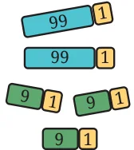
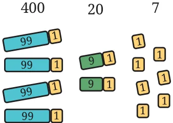
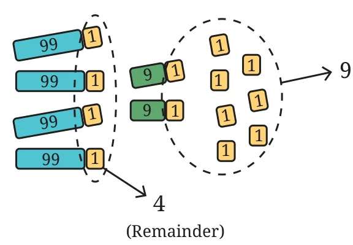
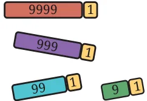
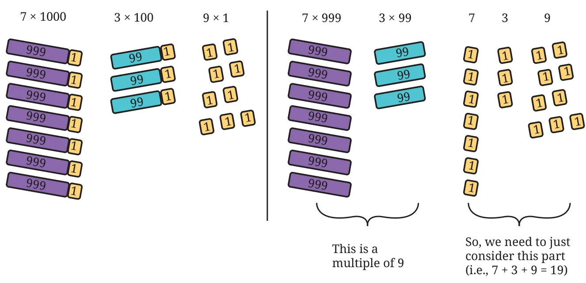

Can you say, without actually calculating, which of these numbers are divisible by 9: 999, 909, 900, 90, 990? All of them.
Can we say that any number made up of only the digits ‘0’ and ‘9’, in any order, will always be divisible by 9? Yes, if each digit is either 0 or 9, then each term in its expanded form will be \(9 \times \square\) or \(0 \times \square\) (the ‘\(\square\)’ denotes a place value). This means each term will be a multiple of 9, for example,
\(99009 = 9 \times 10000 + 9 \times 1000 + 0 \times 100 + 0 \times 10 + 9 \times 1\).
But this shortcut alone cannot identify all the multiples of 9. Unlike the numbers 2, 5, and 10, we cannot identify the multiples of 9 by just looking at the unit’s digit. 99 and 109 are two numbers with 9 as the units digit; but 99 is divisible by 9, while 109 is not. Is 10 divisible by 9? If not, what is the remainder? Check the divisibility of other multiples of 10 (10, 20, 30, ...) by 9. You will notice that for any multiple of 10, the remainder is the same as the number of tens. Similarly, look at the remainder when the multiples of 100 (100, 200, 300, … ) are divided by 9. What do you notice? The remainder is the same as the number of hundreds for any multiple of 100. Using this observation, find the remainder when 427 is divided by 9.


We see that 427 has 4 hundreds; thus, its corresponding remainder (upon division by 9) would be 4. 427 has 2 tens, and its corresponding remainder would be 2. We have 7 units also remaining. Adding all the remainders, we get \(4 + 2 + 7 = 13\). We can make one more group of 9 with 13, leaving a remainder of 4. Therefore, \(427 \div 9\) gives a remainder of 4.

Will this work with bigger numbers? You can see that this is true for any place value:

\(1 = 0 + 1\)
\(10 = 9 + 1\)
\(100 = 99 + 1\)
\(1000 = 999 + 1\)
\(10000 = 9999 + 1\), and so on. Each digit thus denotes the remainder when the corresponding place value is divided by 9. For example, to find the remainder of 7309 when divided by 9, we can just add all the digits — \(7 + 3 + 0 + 9\) — to get 19. This can be seen as follows:

\(7 \times 1000 + 3 \times 100 + 0 \times 10 + 9 \times 1\)
\(= 7 \times (999 + 1) + 3 \times (99 + 1) + 0 \times (9 + 1) + 9 \times (0+1)\)
\(= (7 \times 999 + 3 \times 99 + 0 \times 9 + 9 \times 0) + (7 \times 1 + 3 \times 1 + 0 \times 1 + 9 \times 1)\)
\(= (\underbrace{7 \times 999 + 3 \times 99 + 0 \times 9 + 9 \times 0}_{\substack{\text{This is a}\\ \text{multiple of 9}}}) + (\underbrace{7 + 3 + 0 + 9}_{\substack{\text{So, we need to just}\\ \text{consider this part}}})\).
This means that the number 7309 is 19 more than some multiple of 9. The digits 1 and 9 can further be added to get \(1 + 9 = 10\). Now, we can say that 7309 is 10 more than a multiple of 9. And repeating this step for the number 10, we get the remainder to be \(1 + 0 = 1\), meaning 7309 is 1 more than a multiple of 9. Therefore, \(7309 \div 9\) gives a remainder of 1.
A number is divisible by 9 if and only if the sum of its digits is divisible by 9. Also, we can add the digits of a number repeatedly till a single digit is obtained. This single digit is the remainder when the number is divided by 9.
Look at each of the following statements. Which are correct and why?
- If a number is divisible by 9, then the sum of its digits is divisible by 9.
- If the sum of the digits of a number is divisible by 9, then the number is divisible by 9.
- If a number is not divisible by 9, then the sum of its digits is not divisible by 9.
- If the sum of the digits of a number is not divisible by 9, then the number is not divisible by 9.